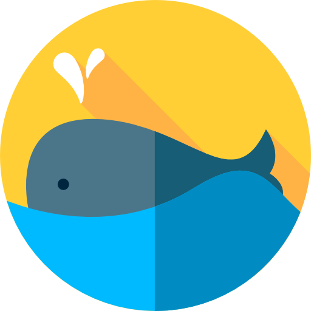
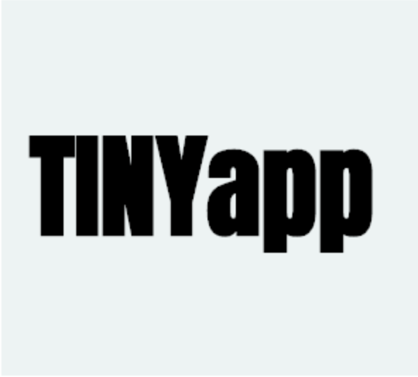

Skill Stack
LANGUAGES & FRAMEWORKS
JavaScript, HTML/CSS/SASS, Knex, Express, EJS, Ruby on Rails, Node.js, React, jQuery, Bootstrap
SYSTEMS & DATABASES
Git/GitHub, MongoDB, PostgreSQL
ADDITIONAL SKILLS
Adobe Photoshop, Adobe Illustrator, Adobe InDesign
Projects
WeSource
Node.js, Cheerio, Express, EJS, jQuery, AJAX, HTML5, Sass, Bootstrap, PostgresSQL, Knex
A collaborative board that allows learners to save learning resources like tutorials, blogs and videos in a central place that is publicly available to any user. This was a group midterm project and I was responsible for the database and back-end scope

Whaler
Node.js, Express, MongoDB, HTML5, CSS, jQuery, AJAX, HTML5
A simple, single page Twitter inspired built that allows users to post and see the whales/wails of other users

TinyApp
Node.js, Express, HTML5, CSS
TinyApp is a full stack web application built that allows users to shorten long URLs (a la bit.ly).
Education
LIGHTHOUSE LABS
Sept. 2018 - Nov 2018
- Web Development Bootcamp
- Full-time immersive web development program
- Consisting of over 500 hours of programming experience
- Covers topics such as JavaScript, React, Node.js, MongoDB, PostgreSQL, jQuery, HTML, CSS, and SASS.
DOUGLAS COLLEGE
Jan. 2018 - April 2018
- Completion of Document Design Course:
- Introductory to the basic principles of two-dimensional design
- Balance and visual dynamics, layout, publication design, and typography
- Advanced Adobe InDesign Application
UNIVERSITY OF BRITISH COLUMBIA
Sept. 2008 - May 2013
- Bachelors of Science, Major in Chemistry
- Successful completion of Science Co-op Program
Experience
SALES & PROPOSAL COORDINATOR
Tervita Corporation, Richmond BC
April 2016 - Sept. 2018
- Developed and continuously updated professional marketing material using Adobe CC Applications
- Exhibited excellent time management and communication skills by simultaneously overseeing the development of 2-7 proposals under tight deadlines
- Displayed high level of attention to detail while performing the final review of all proposals prior to submission
- Collaborate with corporate management to increase the efficiency and effectiveness of the bid review and risk assessment processes
- Due to sales and marketing efforts, Tervita exceeded its sales targets by 36% in the 2017 Fiscal Year
SALES ASSOCIATE / JR ACCOUNT MANAGER
ALS Environmental, Burnaby BC
Aug. 2014 - April 2016
- Managed the production flow of work orders, including maintaining turnaround time and test tracking
- Primary contact for all new business opportunities for ALS Vancouver
- Collaborated with subject matter experts based in different parts of North America to develop proposals
- Redesigned ALS Vancouver proposal template to be tailored and visually appealing to its intended audience.